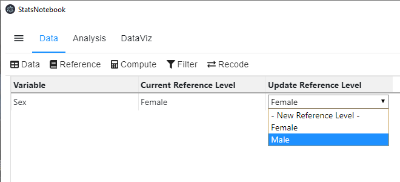

For categorical variable, it is important to set a “reference” category for categorical variable in many analyses. For example, for the variable Sex in our regression analysis tutorial, the default reference is Female. The coefficient of SexMale from the regression represents the effect of male relative to female. In this case, the coefficient -0.87 means that the depression score (the dependent variable in that analysis) for male is 0.87 lower than female.
Coefficients:
Estimate Std. Error t value Pr(>|t|)
(Intercept) 7.98352 3.57490 2.233 0.0270 *
Agreeableness -0.01498 0.02859 -0.524 0.6011
Conscientiousness -0.01702 0.02231 -0.763 0.4467
Extraversion -0.02104 0.01839 -1.144 0.2546
Neuroticism 0.14296 0.01891 7.559 3.94e-12 ***
Openness -0.05455 0.02454 -2.222 0.0278 *
SexMale -0.87264 0.88739 -0.983 0.3270
Changing reference category is easy. It takes only one line of code in R. Alternatively, we can set the reference with a few clicks in StatsNotebook.
currentDataset$Sex <- relevel(currentDataset$Sex, ref="Male")
